5 - Concurrency¶
Keywords: Multi-threading, implementation strategies for multi-threading (concurrency), concurrency vs. parallelism, inter-process communication, race conditions, mutual exclusion, ensuring mutual exclusion (algorithms, hardware supported, mutexes, semaphores, monitors).
Litterature¶
OSTEP Chapter 25, 26, (27), 28, (29), (30), 31, 32, (33), 34
Kapitler med parenteser skimmes: (x)
Learning Goals¶
After this lecture, you
 ... can define what a race condition is
... can define what a race condition is- ... can explain how mutual exclusion can be used to avoid race conditions
- ... can explain strategies for achieving and implementing mutual exclusion
- ... can define the notions of mutex, semaphore, and monitor and explain how they work and where they are useful
- ... can explain how to synchronise two (or more) threads and why it may be necessary
Noter¶
Threads¶
Threads kan ses som en abstrahering i processer.
En tråd er lige som en seperate process, botset fra at de deler adress space, og kan derfor access samme data.
Hver tråd har sit eget sæt registre
Hvis 2 tråde kører på samme CPU skal der laves context switch hvis CPU skal skifte tråd.
- Address space forbliver det samme
Ligesom ved processer har vi en datastruktur til at gemme informationen. Her en thread control block (TCB) i stedet for PCB.
Hver tråd har sin egen stack:
- thread-local storage
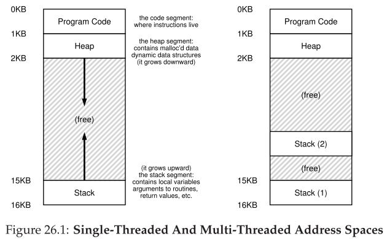
Hvorfor Tråde?¶
Parallelism
En opgave splittes op, og kan køre på flere CPU'er. Parallelization.
I/O
For at undgå at programmet er blocked pga. langsom I/O.
Mange server-based applikationer bruger tråde.
- (web servere, databaser osv.)
Race Conditions¶
Hvis 2 tråde arbejder på den samme variabel, kan der opstå det der kaldes race condition eller data race.
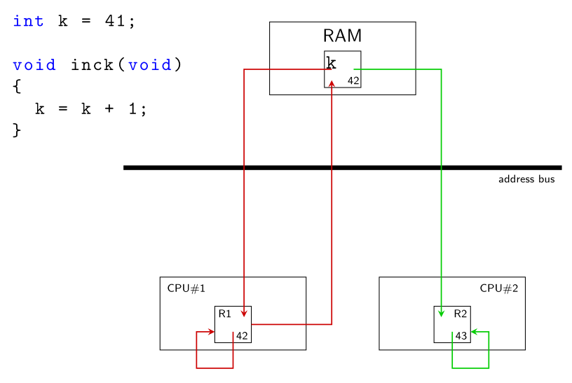
Hvis begge henter variabel k ind på samme med mens den er 42.
- Så tæller de den begge op, og resultatet bliver 43, selvom det burde være 44.
Definitioner¶
Race condition:
- Når resultatet af en beregning afhænger af relative speed af de individuelle tråde
- Med andre ord: Resultatet afhænger af interleaving af trådene.
- Svære at debug
Critical region (critical section):
- Program fragment sårbar overfor race conditions
- "Kritisk region"
- Kritiske regioner skal eksekveres under mutual exclusion
Mutual exclusion (mutex):
- Når kun en tråd (blandt mange) kan tilgå en given resource eller execute en specifik del af program-text.
- "gensidig udelukkelse"
Atomic
- Event eller sekvens af events som sker uafbrudt.
Locks¶
Critical region kode omgives a lock og unlock.
1 2 3 4 5 | |
Her er mutex lock variable (lock for short). Lock variablen holder lock'ens tilstand.
En lock er enten available (unlocked/free)
- Ingen tråde holder lock'en
Eller aquired (locked/held)
- Præcis 1 tråd holder lock'en
Kald til lock() forsøger at aquire låsen.
-
Hvis ingen tråde holder låsen (låsen er available), vil tråden aquire låsen, og eksekvere den critical region.
-
Hvis låsen er held, vil tråden vente på at låsen bliver available
Kald til unlock() vil gøre låsen available igen, og hvis nogle tråde venter på låsen, vil de nu aquire låsen, og eksekvere critical region.
Building a Lock¶
Mål:
- Correctness: Provides mutual exclusion
- Fairness: Får alle tråde et fair forsøg på at aquire. (Er der nogle tråde der starver, og dermed aldrig får fat i låsen)
- Performance
Tidlig løsning for single-processor systemer var at disable interrupts under critical region
1 2 | |
- Simpelt at implementere
Ulemper:
- Lader alle tråde kalde priviligeret instruktion, kan abuses
- Virker ikke på multi-processor systemer.
- Hvis 2 tråde kører på 2 forskellige processorer, er det ligegyldigt om interrupts er disabled
- Kan gøre til at interrupts bliver tabt.
- Eksempelvis hvis CPU misser at disk læsning er færdig
- Ineffektivt
Lock Variables¶
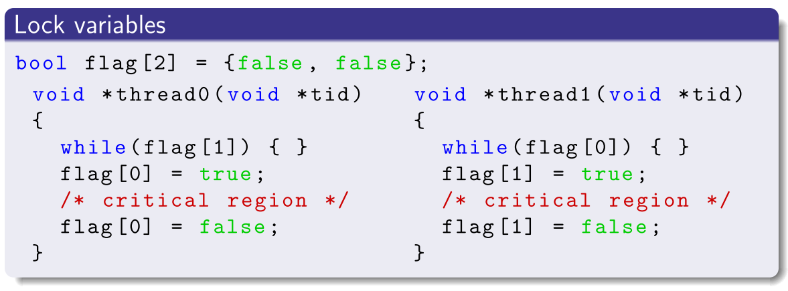
- VIRKER IKKE
- Race conditions
Dekkers Algorithm¶
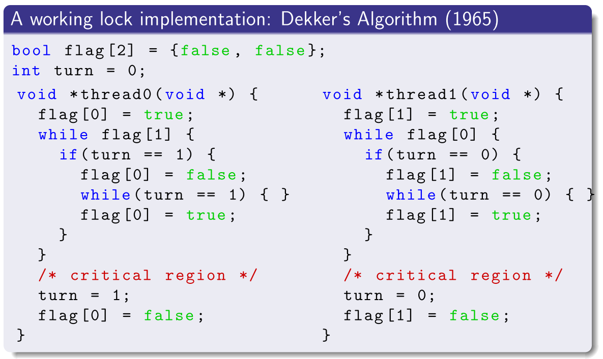
- Ikke effektiv
- Compiler vil måske allokere nogle variable i registers (ikke delt mellem tråde)
- Svær (umulig?) at scalere til mere end 2 tråde.
Spin Lock Med Test-And-Set¶
Hardware instruktion test-and-set (atomic exchange)
Gør følgende atomically:
1 2 3 4 5 | |
1 2 3 4 5 6 7 8 9 10 11 12 13 14 15 | |
Spin-locks kræver preemptive scheduler (interrupter via timer).
- Ellers clogger de CPU
Evaluering af Spin Locks¶
Correctness:
- Ja, lader kun 1 tråd eksekvere critical region af gangen.
Fairness:
- Nej, ingen garanti for ikke at starve
Perfomance
- Ikke så god på single CPU.
- Hvis tråd bliver afbrudt midt i critcal region
- Så kan alle andre tråde, ventende, stå at spinne i en hel time slice
- Rimelig god på multiple CPU, hvis antallet af CPUs ca. passer med antallet af tråde
Compare-And-Swap¶
Ny hardware instruktion, atomically:
1 2 3 4 5 6 | |
Implementering:
1 2 3 4 | |
Fetch-And-Add¶
Hardware instruktion, atomically:
1 2 3 4 5 | |
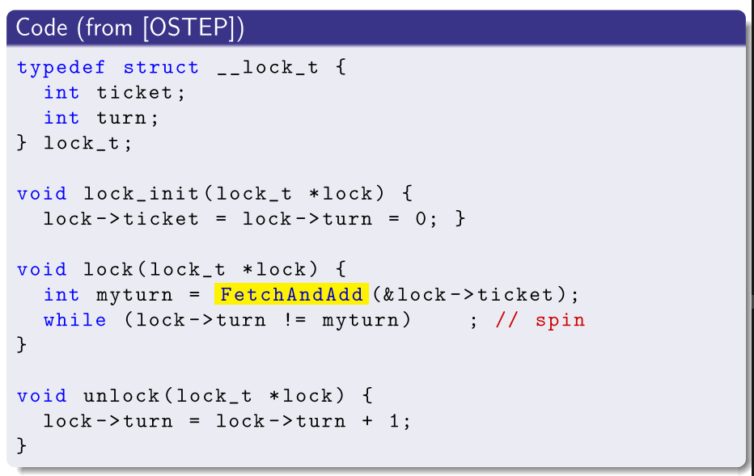
- Sikrer progress for alle tråde. Laver en "kø".
Undgå Tidsspild Ved Spinning¶
Hvis der sker context-switch midt i en critical region, vil en tråd der venter på lock, bare spinne uden at gøre noget, hele time slice.
- Kaldes busy wait.
Mulig løsning: yield.
- I stedt for at gøre ingenting, så kald
yield - Stadig ikke helt god. 100 threads der venter:
- RR scheduler, waster 99 cycles
- Stadig bedre end at wase 99 time slices
Brug af Queues: Sleeping Instead of Spinning¶
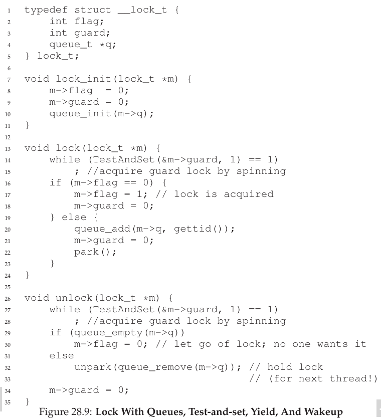
Semaphores¶
Semaphore: Et objekt med en integer værdi der kan manipuleres med 2 routiner.
I POSIX er det:
sem_wait()sem_post()
Initialiseres med
1 2 3 | |
1 2 3 4 5 6 7 8 9 | |
Binary Semaphore (Lock)¶
1 2 3 4 5 6 | |
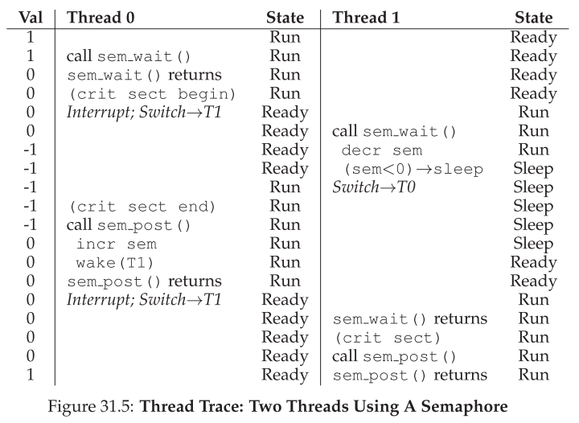
Semaphores For Ordering¶
1 2 3 4 5 6 7 8 9 10 11 12 13 14 15 16 17 | |
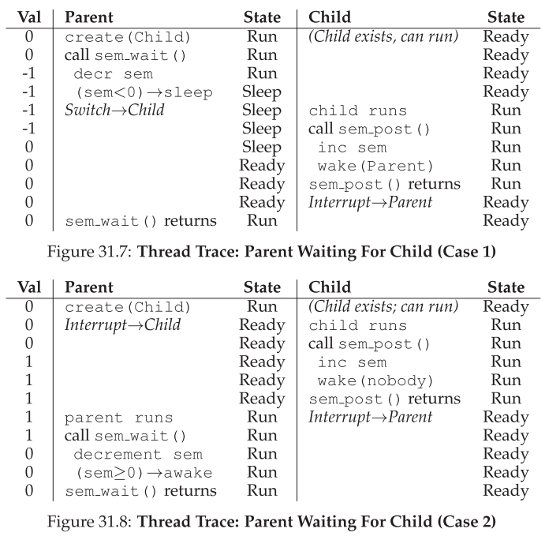
The Producer/Consumer Problem (Bounded Buffer Problem)¶
- En eller flere producer threads
- Genererer data items, placerer dem i en buffer
- En eller flere consumer threads
- Tager items fra bufferen og consumer dem
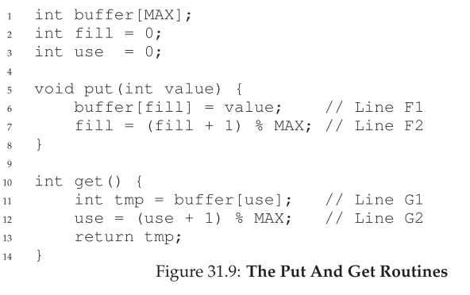
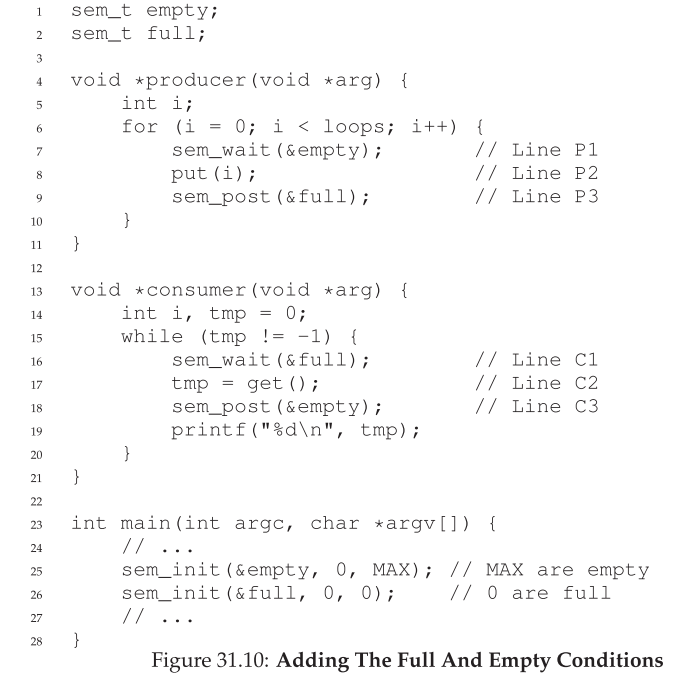
- Virker hvis MAX er 1
- Hvis MAX er eks 10, får vi race condition
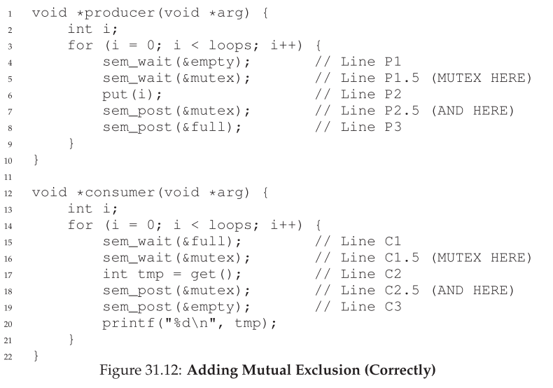
Reader/Writer Lock¶
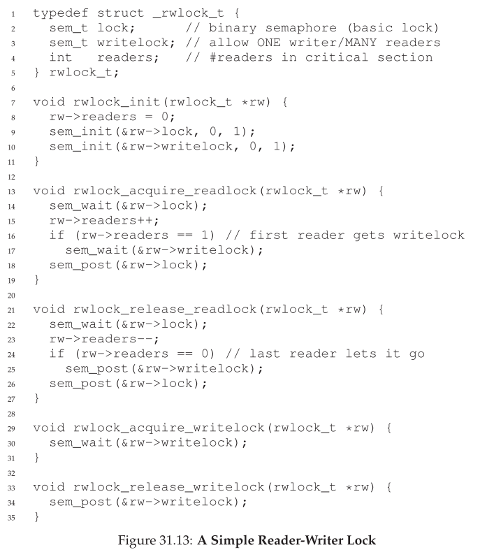
Thread Throtting with Semaphores¶
Hvis vi vil kontrollere max antal tråde, kan vi gøre det med semaphores.
- Kaldes throttling, en form for admission control
Eksempelvis hvis en masse memory heavy arbejde, og der kører en masse tråde på en gang, kan det være at fysisk memory overstiges.
Vi kan initialisere en semaphore med antallet af max tråde.